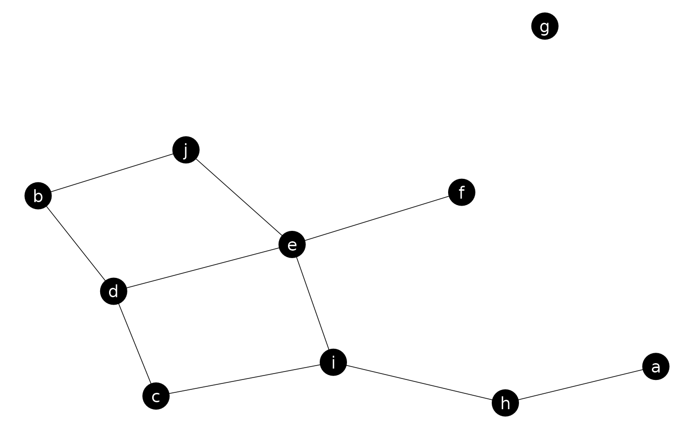
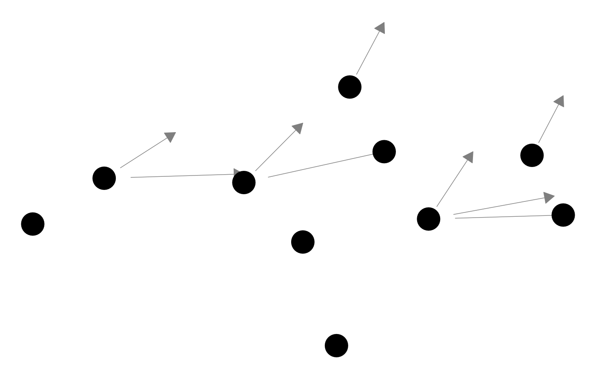
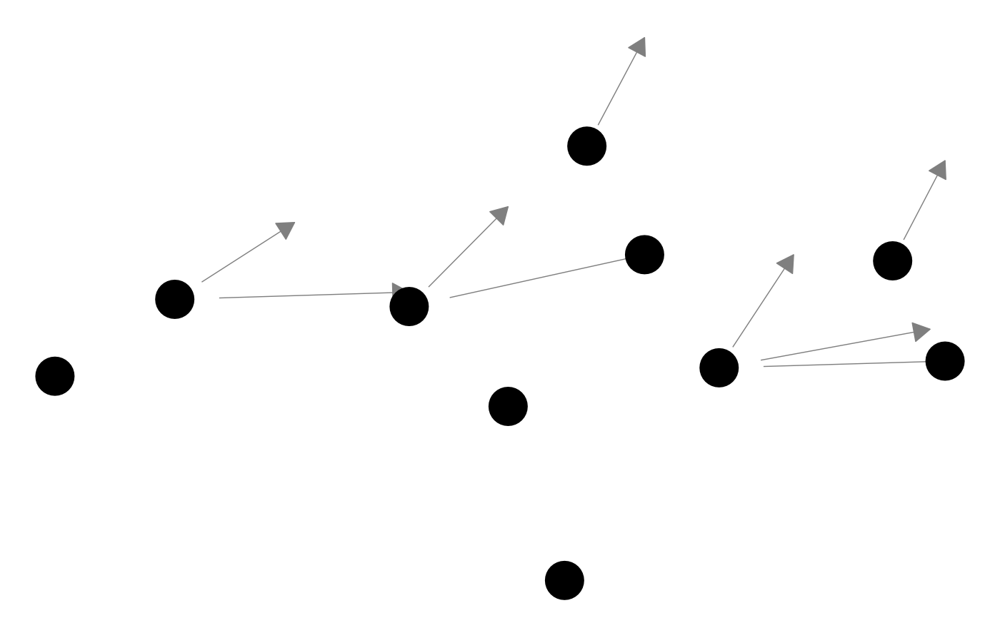

![[Deprecated]](figures/lifecycle-deprecated.svg)
Function for plotting network objects using ggplot2, now replaced by the
ggnet2 function, which provides additional control over
plotting parameters. Please visit https://github.com/briatte/ggnet for
the latest version of ggnet2, and https://briatte.github.io/ggnet/ for a
vignette that contains many examples and explanations.
Usage
ggnet(
net,
mode = "fruchtermanreingold",
layout.par = NULL,
layout.exp = 0,
size = 9,
alpha = 1,
weight = "none",
weight.legend = NA,
weight.method = weight,
weight.min = NA,
weight.max = NA,
weight.cut = FALSE,
group = NULL,
group.legend = NA,
node.group = group,
node.color = NULL,
node.alpha = alpha,
segment.alpha = alpha,
segment.color = "grey50",
segment.label = NULL,
segment.size = 0.25,
arrow.size = 0,
arrow.gap = 0,
arrow.type = "closed",
label = FALSE,
label.nodes = label,
label.size = size/2,
label.trim = FALSE,
legend.size = 9,
legend.position = "right",
names = deprecated(),
quantize.weights = deprecated(),
subset.threshold = deprecated(),
top8.nodes = deprecated(),
trim.labels = deprecated(),
...
)Arguments
- net
an object of class
network, or any object that can be coerced to this class, such as an adjacency or incidence matrix, or an edge list: see edgeset.constructors and network for details. If the object is of class igraph and the intergraph package is installed, it will be used to convert the object: seeasNetworkfor details.- mode
a placement method from those provided in the
snapackage: see gplot.layout for details. Also accepts the names of two numeric vertex attributes ofnet, or a matrix of numeric coordinates, in which case the first two columns of the matrix are used. Defaults to the Fruchterman-Reingold force-directed algorithm.- layout.par
options to be passed to the placement method, as listed in gplot.layout. Defaults to
NULL.- layout.exp
a multiplier to expand the horizontal axis if node labels get clipped: see expand_range for details. Defaults to
0(no expansion).- size
size of the network nodes. If the nodes are weighted, their area is proportionally scaled up to the size set by
size. Defaults to9.- alpha
a level of transparency for nodes, vertices and arrows. Defaults to
1.- weight
the weighting method for the nodes, which might be a vertex attribute or a vector of size values. Also accepts
"indegree","outdegree","degree"or"freeman"to size the nodes by their unweighted degree centrality ("degree"and"freeman"are equivalent): seedegreefor details. All node weights must be positive. Defaults to"none"(no weighting).- weight.legend
the name to assign to the legend created by
weight. Defaults toNA(no name).- weight.method
see
weight- weight.min
whether to subset the network to nodes with a minimum size, based on the values of
weight. Defaults toNA(preserves all nodes).- weight.max
whether to subset the network to nodes with a maximum size, based on the values of
weight. Defaults toNA(preserves all nodes).- weight.cut
whether to cut the size of the nodes into a certain number of quantiles. Accepts
TRUE, which tries to cut the sizes into quartiles, or any positive numeric value, which tries to cut the sizes into that many quantiles. If the size of the nodes do not contain the specified number of distinct quantiles, the largest possible number is used. Seequantileandcutfor details. Defaults toFALSE(does nothing).- group
the groups of the nodes, either as a vector of values or as a vertex attribute. If set to
modeon a bipartite network, the nodes will be grouped as"actor"if they belong to the primary mode and"event"if they belong to the secondary mode.- group.legend
the name to assign to the legend created by
group.- node.group
see
group- node.color
a vector of character strings to color the nodes with, holding as many colors as there are levels in
node.group. Defaults toNULL, which will assign grayscale colors to each group.- node.alpha
transparency of the nodes. Inherits from
alpha.- segment.alpha
the level of transparency of the edges. Defaults to
alpha, which defaults to1.- segment.color
the color of the edges, as a color value, a vector of color values, or as an edge attribute containing color values. Defaults to
"grey50".- segment.label
the labels to plot at the middle of the edges, as a single value, a vector of values, or as an edge attribute. Defaults to
NULL(no edge labels).- segment.size
the size of the edges, in points, as a single numeric value, a vector of values, or as an edge attribute. Defaults to
0.25.- arrow.size
the size of the arrows for directed network edges, in points. See
arrowfor details. Defaults to0(no arrows).- arrow.gap
a setting aimed at improving the display of edge arrows by plotting slightly shorter edges. Accepts any value between
0and1, where a value of0.05will generally achieve good results when the size of the nodes is reasonably small. Defaults to0(no shortening).- arrow.type
the type of the arrows for directed network edges. See
arrowfor details. Defaults to"closed".- label
whether to label the nodes. If set to
TRUE, nodes are labeled with their vertex names. If set to a vector that contains as many elements as there are nodes innet, nodes are labeled with these. If set to any other vector of values, the nodes are labeled only when their vertex name matches one of these values. Defaults toFALSE(no labels).- label.nodes
see
label- label.size
the size of the node labels, in points, as a numeric value, a vector of numeric values, or as a vertex attribute containing numeric values. Defaults to
size / 2(half the maximum node size), which defaults to6.- label.trim
whether to apply some trimming to the node labels. Accepts any function that can process a character vector, or a strictly positive numeric value, in which case the labels are trimmed to a fixed-length substring of that length: see
substrfor details. Defaults toFALSE(does nothing).- legend.size
the size of the legend symbols and text, in points. Defaults to
9.- legend.position
the location of the plot legend(s). Accepts all
legend.positionvalues supported bytheme. Defaults to"right".- names
- see
group.legendandsize.legend - quantize.weights
- see
weight.cut - subset.threshold
- see
weight.min - top8.nodes
- this functionality was experimental and has
been removed entirely from
ggnet - trim.labels
- see
label.trim - ...
other arguments passed to the
geom_textobject that sets the node labels: seegeom_textfor details.
Details
The degree centrality measures that can be produced through the
weight argument will take the directedness of the network into account,
but will be unweighted. To compute weighted network measures, see the
tnet package by Tore Opsahl (help("tnet", package = "tnet")).
See also
ggnet2 in this package,
gplot in the sna package, and
plot.network in the network
package
Author
Moritz Marbach and Francois Briatte, with help from Heike Hofmann, Pedro Jordano and Ming-Yu Liu
Examples
# Small function to display plots only if it's interactive
p_ <- GGally::print_if_interactive
library(network)
#>
#> ‘network’ 1.19.0 (2024-12-08), part of the Statnet Project
#> * ‘news(package="network")’ for changes since last version
#> * ‘citation("network")’ for citation information
#> * ‘https://statnet.org’ for help, support, and other information
#>
#> Attaching package: ‘network’
#> The following object is masked from ‘package:Hmisc’:
#>
#> is.discrete
# random adjacency matrix
x <- 10
ndyads <- x * (x - 1)
density <- x / ndyads
m <- matrix(0, nrow = x, ncol = x)
dimnames(m) <- list(letters[1:x], letters[1:x])
m[row(m) != col(m)] <- runif(ndyads) < density
m
#> a b c d e f g h i j
#> a 0 0 0 0 0 0 0 1 0 1
#> b 0 0 0 0 0 0 0 0 0 0
#> c 0 0 0 0 0 0 0 0 0 1
#> d 0 0 0 0 0 0 0 0 0 1
#> e 0 0 0 0 0 0 0 0 0 0
#> f 0 0 0 0 0 0 0 1 0 0
#> g 0 0 0 1 0 0 0 1 0 0
#> h 0 0 0 0 0 0 0 0 0 0
#> i 0 0 0 0 1 0 0 0 0 0
#> j 1 0 0 1 0 0 0 0 0 0
# random undirected network
n <- network::network(m, directed = FALSE)
n
#> Network attributes:
#> vertices = 10
#> directed = FALSE
#> hyper = FALSE
#> loops = FALSE
#> multiple = FALSE
#> bipartite = FALSE
#> total edges= 8
#> missing edges= 0
#> non-missing edges= 8
#>
#> Vertex attribute names:
#> vertex.names
#>
#> No edge attributes
ggnet(n, label = TRUE, alpha = 1, color = "white", segment.color = "black")
#> Warning: `ggnet()` was deprecated in GGally 2.2.2.
#> ℹ Please use `ggnet2()` instead.

# random groups
g <- sample(letters[1:3], 10, replace = TRUE)
g
#> [1] "b" "a" "a" "a" "b" "b" "a" "b" "a" "b"
# color palette
p <- c("a" = "steelblue", "b" = "forestgreen", "c" = "tomato")
p_(ggnet(n, node.group = g, node.color = p, label = TRUE, color = "white"))
#> Warning: node groups and colors are of unequal length; using grayscale colors
 # edge arrows on a directed network
p_(ggnet(network(m, directed = TRUE), arrow.gap = 0.05, arrow.size = 10))
#> Warning: Removed 1 row containing missing values or values outside the scale
#> range (`geom_segment()`).

# edge arrows on a directed network
p_(ggnet(network(m, directed = TRUE), arrow.gap = 0.05, arrow.size = 10))
#> Warning: Removed 1 row containing missing values or values outside the scale
#> range (`geom_segment()`).
